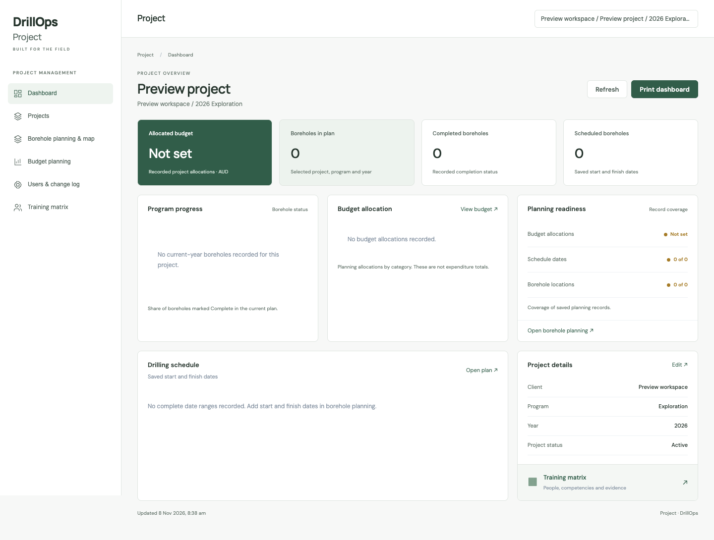

Set up the program.
Organise the project and program, plan boreholes and record the budget allocations for the work.
DrillOps / Project
A focused workspace for the project information your team needs to keep work moving.
Discuss Project ↗Already a customer? Sign in to Project ↗
THE WORKFLOW
See what has been planned, what has been recorded as complete and which planning details still need attention.
Organise the project and program, plan boreholes and record the budget allocations for the work.
Review borehole progress, the saved drilling timeline and planning completeness in one dashboard.
Use the training matrix to review recorded evidence, expiry dates and role requirements.
Project / IN PRACTICE
Keep locations, schedules and budgets together.
Maintain planned boreholes and their locations so the program can be reviewed spatially as well as in a list. Keep the planning information with the project rather than separating the map from the records it describes.
Use the saved drilling schedule to review the planned sequence of work. Bring the borehole plan and rig scheduling information into the same project context so the next activity can be considered against the wider program.
Record the allocations for the planned work and review them in the project budget views. Planning allocations describe the intended spend; actual invoices and open accruals remain identifiable as different financial inputs.
See the program and the individual hole.
Review the selected program’s planned work, borehole progress, saved schedules and budget information. Use the overview to find the part of the program that needs attention, then open the records behind it.
Review available production, budget and cost information at the hole level. Keep the distinctions between planned amounts, operational charges and linked invoice amounts visible when investigating a variance.
Use the training matrix to review recorded evidence, expiry dates and role requirements. The project workspace also provides access to laboratory and project administration records for the work your organisation manages.
IN THE WORKSPACE
Review budget allocations, planned boreholes, progress and schedules for the selected program.
Keep planned holes, locations and saved scheduling details together.
Manage allocations for planned work. Allocations describe the plan; they are separate from invoice actuals.
Review the evidence and requirements for people assigned to the work, including upcoming expiry dates.
QUESTIONS
Daily shift reporting and operational charge detail are handled in EOS. Project concentrates on the plan, program progress, budgets and the project-level view.
No. Allocations describe the plan. Invoice actuals, estimated accruals and recorded operational charges are separate inputs, and should be read in their own context.
Contact DrillOps to discuss the program and the information you want to manage. Existing customers can sign in using the account provided by their organisation.
Project
Sign in with the account provided by your organisation.